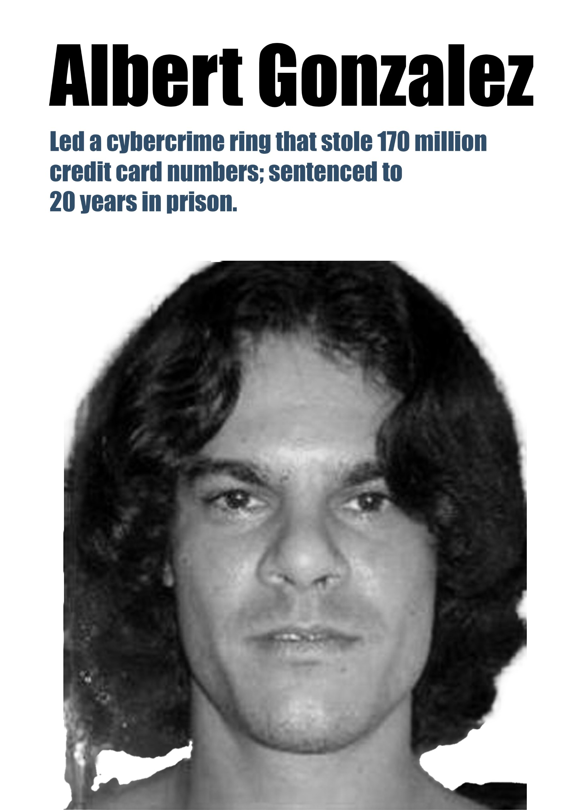

Albert Gonzalez

Albert Gonzalez masterminded one of the largest credit card thefts in history, stealing over 170 million credit card numbers. He utilized techniques like "wardriving" to exploit weak Wi-Fi networks of major retailers.
His actions forced a global rethink of financial security, leading to the strict PCI-DSS standards that protect your digital transactions today.